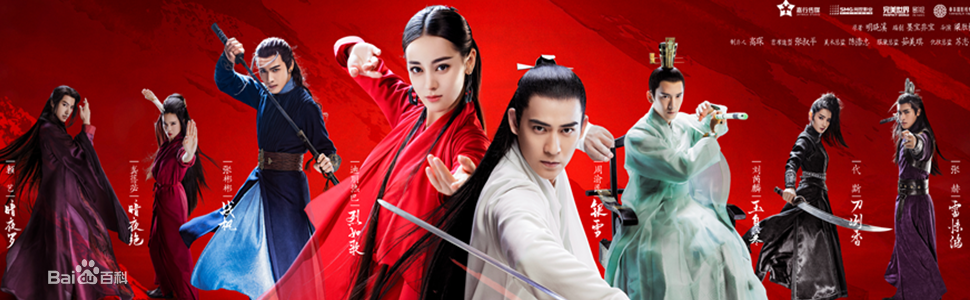

简介
上古时代，暗河宫危害天下苍生。宫主暗夜罗（赖艺饰）喜欢师姐暗夜冥，但暗夜冥嫁给了侠士战飞天。烈明镜为保护战飞天的孩子，将战飞天家刚出生的女婴和烈火山庄庄主烈明镜刚出生的男婴掉包。烈明镜为女婴取名烈如歌（迪丽热巴饰），战飞天为男婴取名战枫（张彬彬饰）。战飞天去世，烈明镜收养战枫。烈如歌与大师兄战枫、二师兄玉自寒（刘芮麟饰）一起长大。烈如歌与战枫相爱。暗夜罗发现烈火山庄日益壮大，决意破坏。他骗战枫说杀害战飞天的凶手是烈明镜。战枫和烈如歌分手。烈如歌结识银雪公子（周渝民饰），银雪公子爱慕烈如歌，尽心保护如歌。战枫误信暗夜罗，裔浪杀死了烈明镜，嫁祸霹雳门。烈火山庄管家裔浪当年参与掉包婴儿事件，作恶多端，向战枫吐露真相。战枫意识到自己杀死了亲生父亲烈明镜，他决意向暗夜罗复仇。烈如歌与战枫、玉自寒、银雪一起联手制服暗夜罗。从此暗河宫消失，百姓过上安定生活 。
演员 迪丽热巴
迪丽热巴（Dilraba），1992年6月3日出生于新疆乌鲁木齐市，中国内地影视女演员 。
2013年，迪丽热巴因主演个人首部电视剧《阿娜尔罕》而出道 。2014年，她主演了奇幻剧《逆光之恋》 。2015年，迪丽热巴凭借爱情剧《克拉恋人》赢得高人气，并获得国剧盛典最受欢迎新人女演员奖 。2016年，其主演的现代剧《麻辣变形计》播出 ；同年，她还凭借喜剧片《傲娇与偏见》获得中英电影节最佳新人奖 。2017年，迪丽热巴因在玄幻剧《三生三世十里桃花》中饰演青丘白凤九而获得白玉兰奖最佳女配角提名 。
配音 乔诗语
乔诗语，1986年8月3日出生于山东青岛，中国内地配音女演员，毕业于北京师范大学。2008年，乔诗语配音首部古装剧《母仪天下》。2009年，在青春爱情剧《一起来看流星雨》中为女主角楚雨荨配音从而获得关注。2011年为单机游戏《仙剑奇侠传五》中第二女主角小蛮献声。2015年7月，乔诗语第四次为仙剑系列献声，为单机游戏《仙剑奇侠传六》中的洛昭言配音 。12月，在古装穿越网络剧《太子妃升职记》中为女主角张芃芃配音。2016年，在民国悬疑剧《老九门》中为尹新月配音 。2017年，在古装玄幻剧《三生三世十里桃花》中为迪丽热巴饰演的凤九配音 。
角色 烈如歌
烈如歌烈火山庄继承人，也是武林盟主之女，武功不高，不谙世事，但纯净善良，灵动活泼，倍受身边人喜爱。在经历了种种变故后，涅槃重生，武功日益精进，这源于她幼年时曾被封印。
烈如歌洒脱大气，火焰般纯真活泼。烈如歌闯荡江湖，无意中卷入情仇恩怨。武功不高，不谙世事，但纯净善良，灵动活泼，倍受身边人喜爱。在经历了种种变故后，涅槃重生，武功日益精进，这源于她幼年时曾被封印。 原身份为烈火山庄大小姐，事实上是暗夜冥和战飞天之女。
演员 周渝民
周渝民（Vic Chou），1981年6月9日出生于台湾省宜兰县，中国台湾影视男演员、流行乐歌手，F4组合成员 。
2001年，凭借在偶像剧《流星花园》饰演花泽类而崭露头角 。2009年，在电视剧《痞子英雄》中成功饰演陈在天并凭借这部作品入围了第44届台湾电视金钟奖最佳男主角 。自2008年主演了电影《蝴蝶飞》之后，周渝民开始走上大荧幕，2011年，凭借影片《爱你一万年》获得大阪亚洲电影节最受观众欢迎大奖 。2013年，周渝民凭借在电视剧《彼岸1945》获得第48届台湾电视金钟奖最佳男主角奖 。2014年11月11日，主演的电影《单身男女2》上映 。2015年，参演彭顺执导电影《宅女侦探桂香》 。2016年，参演宫廷玄幻剧《柜中美人》 和犯罪动作大片《反贪风暴2》 。2018年3月1日，其主演的武侠剧《烈火如歌》在优酷播出 。
配音 陈浩
陈浩，演员、配音演员。毕业于四川师范大学电影电视学院表演系。2002年开始从事配音工作。现任四川人民艺术剧院演员、成都声娱文化艺术总监。 配音代表作有电视剧《锦绣未央》拓跋余、《孤芳不自赏》何侠，电影《叶问》叶问、《窃听风云》林一祥，动画《海绵宝宝》海绵宝宝，游戏《仙剑奇侠传五》魔翳等。 担任配音导演的作品有电视剧《叶挺将军》《北平战与和》、动画《加菲猫的幸福生活》等。
角色 银雪
银雪为救玉自寒需要重新修炼，但因为担心如歌，便强行破冰而出，可功力却只剩下以前的两成不到。结局中，为救如歌等人银雪消失了，幻化为漫天飞雪，灵魂则融入玉自寒的身体。原本聋哑盲双腿还残疾的玉自寒奇迹般地好了起来。
演员 张彬彬
张彬彬，1993年1月19日生于江苏无锡，中国内地影视男演员，毕业于上海戏剧学院。2014年，因参演青春偶像剧《微时代》而步入演艺圈。2015年，主演青春网络剧《匆匆那年：好久不见》。2016年，凭借清宫言情剧《寂寞空庭春欲晚》被观众熟知；同年，因特别出演的都市爱情偶像剧《微微一笑很倾城》获得更多关注。2017年，其主演的浪漫爱情剧《漂亮的李慧珍》播出；同年，主演古装武侠剧《秦时丽人明月心》。
配音 惠龙
中国第一代配音专业本科毕业生，中国第一位经纪人签约制度下的男配音演员。怪物细胞艺术创想组主理人之一、设计师。曾执导《身边的奥秘》系列片，曾任四川省电影电视广告制作中心导演。多年来研习电影、美学、哲学以及跨界艺术创作。2006年进入配音行业，曾供职于北京“星特”、“京诚之声”配音组。戏感时尚，音色多变。中外影视、游戏动漫、广告演播、演唱配音皆能胜任。现常驻北京进行配音、设计、戏剧等艺术创作。
角色 战枫
烈火山庄大师兄，武林盟主义兄之子，俊朗刚毅，寡言却不失柔，曾与青梅竹马的烈如歌定下终身之约，却在一夕之间毁掉婚约，变得冷酷无情，他自认了解十九年前的恩怨真相，为报家仇不惜绝情绝爱，却伤人伤己。
演员 代斯
代斯，出生于新疆乌鲁木齐，毕业于中央戏剧学院2011级本科表演系，中国内地影视女演员 。2014年，出演古装电视剧《通天狄仁杰》，正式出道。2016年，出演古装玄幻剧《三生三世十里桃花》，因在剧中的表现开始受到关注 。5月，主演古装玄幻剧《轩辕剑之汉之云》 。2017年，出演古装言情电视剧《烈火如歌》 。7月，主演推理悬疑电影《生死语者·秦明》 。
配音 唐小喜
唐小喜，原名唐静，女性配音演员。毕业于北京师范大学。现居北京。 嗓音温和恬静。代表作电视剧《古剑奇谭》襄铃、《秦时明月》高月，动画《狐妖小红娘》厉雪扬、《黑白无双》小白等。
角色 刀冽香
天下无刀城城主唯一的女儿，虽是众人呵护的小公主，却毫不柔弱做作，喜欢雷惊鸿。
演员 刘芮麟
刘芮麟，1990年10月6日出生于北京，毕业于北京电影学院09级表演系本科，中国内地影视男演员。2011年，签约橙天娱乐并正式开始演艺生涯。2014年，因出演都市情感剧《我爱男闺蜜》受到关注 。2015年，凭借励志喜剧电影《滚蛋吧！肿瘤君》获得第16届中国电影表演艺术学会奖新人奖 ；同年，他还参演青春悬疑电影《我是证人》 。2016年，除了主演青春校园网络剧《睡在我上铺的兄弟》 ；其主演的青春电影《记得少年那首歌》及现代喜剧片《外公芳龄38》也相继上映 。2017年，参演的古装玄幻剧《三生三世十里桃花》播出 ，同年，他还主演了古装言情剧《烈火如歌》与后都市情感剧《趁我们还年轻》 。
配音 苏尚卿
苏尚卿，新生代配音演员。729声工场主力成员，现居北京。代表作有电视剧《择天记》陈长生，动画《大鱼海棠》湫 、《全职高手》乔一帆，游戏《梦间集》金铃索、灵狐等。
角色 玉自寒
皇帝之子静渊王，也是烈火山庄二师兄，因皇室争名夺权遭奸人所害，自幼双耳失聪，双腿残疾。为远离宫廷纷争被送到烈火山庄的他，冷静睿智，温润如玉，从小陪伴如歌，总是解救她于危难之中。
演员 赖艺
赖艺，1990年11月29日出生，中国内地男演员，毕业于北京电影学院表演系09级。2015年，赖艺因主演英雄特摄片《铠甲勇士捕将》而正式进入演艺圈 。同年，他还相继参演了古装武侠电视剧《锦衣夜行》 和青春悬疑电影《我是证人》 。2016年，赖艺出演了古装玄幻电视剧《三生三世十里桃花》 和青春偶像电视剧《囧女翻身之嗨如花》 ，同年11月出演都市情感剧《谈判官》 。2017年4月出演古装言情剧《烈火如歌》 ，6月出演古装女性励志电视剧《扶摇》 。
配音 马语非
角色 暗夜罗
暗河宫宫主，功力深厚，极度痴情却又极其冷酷残忍，爱而不得的痛苦，成了他要让天下人一起备受煎熬的执念
演员 龚蓓苾
龚蓓苾，1978年2月21日出生于福建省泉州市石狮市，中国内地女演员。高中的时候，首次主演电影《你没有十六岁》。高中毕业后，龚蓓苾到北京考入中央戏剧学院表演系本科生。1997年，在校读书的龚蓓苾与香港的一家经纪公司签约，接拍了内地的几部偶像剧《京港爱情线》、《将爱情进行到底》 。2001年，主演和监制的香港影片《车四十四》并在威尼斯国际电影节获得了第58届的评委会奖及美国圣丹斯电影节评委会特别表扬奖 [2] 。2003年，龚蓓苾被评为泉州市十大杰出青年。2004年，成为了石狮市政协委员 。2005年，龚蓓苾和夏雨、李冰冰领衔主演的爱情喜剧电影《独自等待》，获得了北京大学生电影节最受欢迎女演员奖提名及金鸡奖最佳影片在内的三项题名。龚蓓苾还演唱了同名电影主题曲《独自等待》。随后在贺岁喜剧电影《爱情呼叫转移》里和她友情客串的《保持通话》中再次受到好评 。2009年，和郭富城共同主演香港悬疑片《B+侦探》。2012年，龚蓓苾和吴彦祖及奥斯卡影帝凯文史派西领衔主演的电影《形影不离》在全国上映，并受邀参展韩国釜山国际电影节。2015年，龚蓓苾将有三部作品即将播出，电视剧《我的婚姻谁做主》、《恶老板》、及唐人影视、玄机科技携手打造的浪漫武侠大戏《秦时明月》中的雪女一角 。2015年，龚蓓苾出演由于正工作室出品的时装偶像剧《云巅之上》。 2016年参演电视剧《幻城》 ；同年主演古装励志剧《重耳传》 。
配音 邱秋
邱秋，出生于安徽省，中国内地配音女演员，毕业于北京电影学院表演系 。2006年，配音个人首部作品《少年包青天3》，从而正式开启了她的配音生涯。2007年，在古装武侠剧《碧血剑》中为温青青配音。2010年，在爱情剧《佳期如梦》中，为女主角尤佳期配音。2015年，在古装传奇剧《琅琊榜》中为刘涛饰演的穆霓凰配音从而获得关注 。2016年，在青春爱情剧《爱的阶梯》中为迪丽热巴饰演的宋子涵配音。2017年1月，在古装爱情玄幻剧《三生三世十里桃花》中，为祝绪丹饰演的玄女配音；2月，在青春爱情励志剧《云巅之上》中，为臧洪娜饰演的安心配音。
角色 暗夜绝
江南霹雳门的二夫人，暗处则是暗河宫隐秘在外的三宫主，诡谲多变猜不着探不透，一心听命于暗夜罗。
